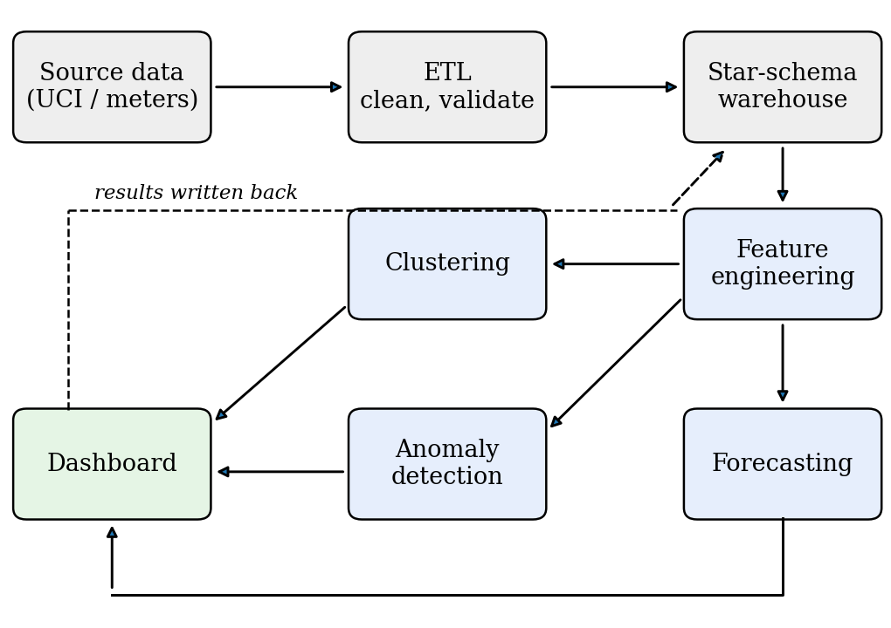
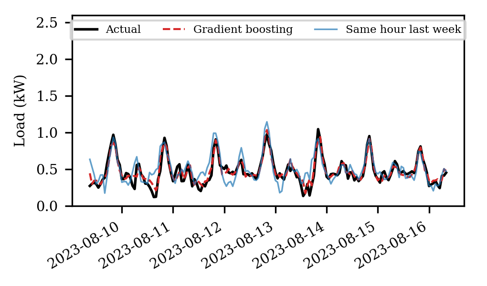
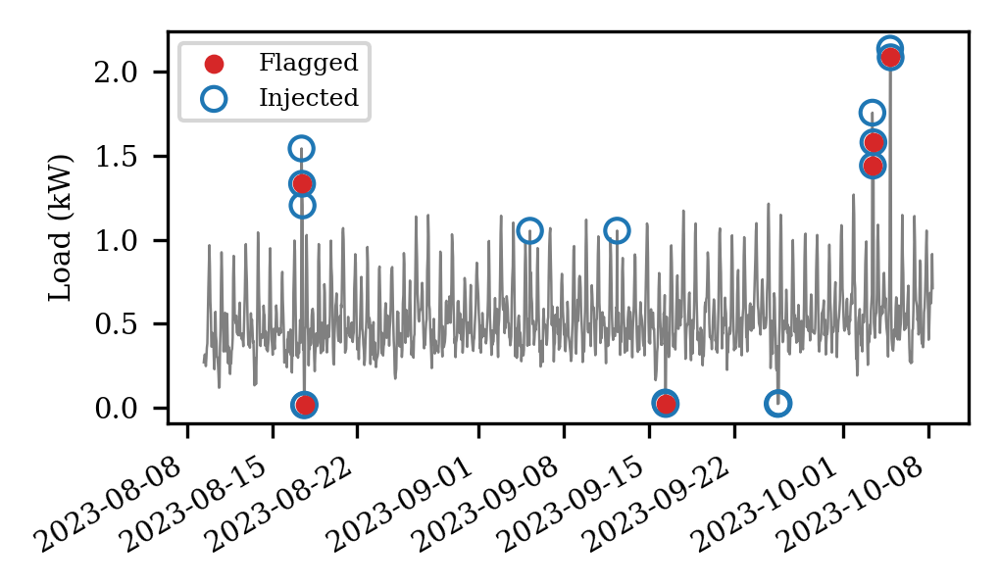
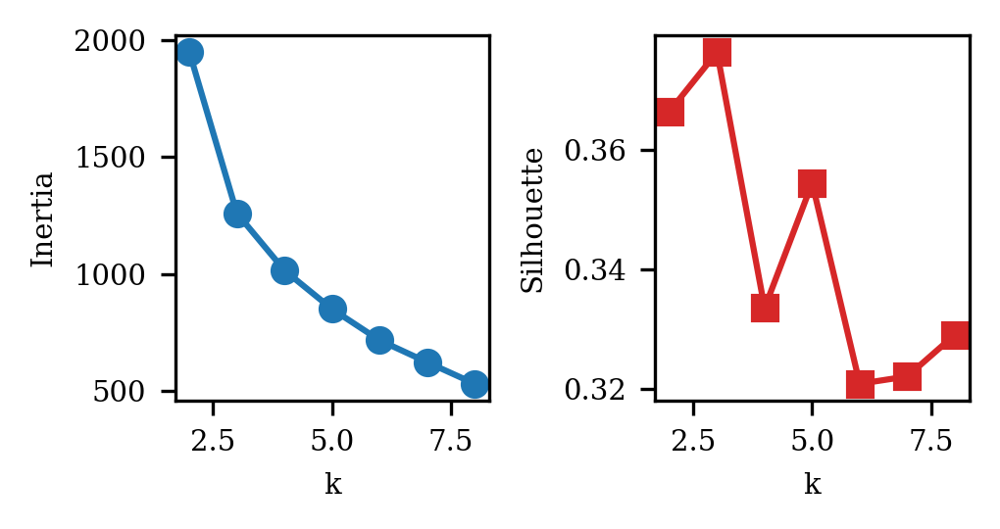

AI-Based Electricity Consumption Intelligence, Prediction and Anomaly Detection Using Data Warehousing and Data Mining
Onkar Shelke
Roll No. 25102C2002
Department of Computer Engineering
Vidyalankar Institute of Technology, Mumbai, India
Abstract—Electricity use in homes and buildings is getting harder to predict. Electric vehicles, air conditioning, new appliances and digital services all change when and how much power is drawn. Conventional billing dashboards report what was consumed but say little about what is likely next or whether a reading looks wrong. This paper describes a framework that connects a star-schema data warehouse to three mining tasks: short-term load forecasting, unsupervised anomaly detection and clustering of daily load profiles. The design is built around the public UCI Individual Household Electric Power Consumption dataset so that others can repeat it. Because the full UCI experiment has not yet been run, the pipeline was validated end to end on a simulated two-year hourly series with injected faults. On that data a gradient-boosted regressor reduced mean absolute error by about 39% relative to a last-hour baseline (0.075 against 0.122 kW), an Isolation Forest recovered 62.5% of injected anomalies at 37.5% precision, and K-means set fault days apart from normal days. A query-timing study on 2.08 million rows found no speed advantage for the star schema over a flat table. These figures test the code and evaluation protocol; they are not claims about real households.
Index Terms—electricity consumption, data warehousing, data mining, load forecasting, anomaly detection, clustering, smart energy analytics
I. INTRODUCTION
Electricity now underpins almost everything: lighting and cooling at home, rail and road transport, mobile networks, and the data centres behind online services. The International Energy Agency reported that global electricity demand rose by 4.3 percent in 2024 and expected strong growth to continue through 2027 [1], [2]. At that scale, even a small gain in how consumption is measured and scheduled adds up across millions of users.
Most consumer-facing monitoring tools stop at description. They show units used per day or per month, perhaps as a bar chart. That helps with checking a bill, but it does not tell a household whether tomorrow evening will be heavier than usual, or whether last night’s spike was a kettle, a faulty geyser or a meter glitch. Answering such questions needs history that is stored consistently and models that can learn from it.
Two research areas speak to this need, and they are usually treated apart. Data warehousing concerns storing and organising large histories so they can be queried at many levels of detail [3]. Data mining and machine learning concern extracting predictions, patterns and exceptions from that history [4]. Forecasting papers often start from one flat file and anomaly-detection papers from another, so the storage layer is rarely discussed. In a deployment the two cannot be separated, because a model is only as reusable as the data layout beneath it.
This paper proposes an Electricity Consumption Intelligence framework with four stages: data integration, warehouse storage, mining, and decision-oriented presentation. Its contributions are:
Section II states the problem and Section III reviews related work. Sections IV and V describe the architecture and mining methods, Section VI the experimental design, and Section VII the results. Section VIII discusses the findings, and Sections IX–XIII cover the dashboard, deployment and privacy, limitations, future work and conclusions.
II. PROBLEM STATEMENT AND OBJECTIVES
Raw smart-meter output is awkward to use directly. The UCI data, for example, are sampled once a minute, contain gaps, carry several correlated channels (active and reactive power, voltage, current and three sub-meters), and repeat strongly each day and week. Feeding such a series into a model without structure invites leakage, wasted computation and results nobody can reproduce.
The study therefore has seven objectives: (1) design a warehouse schema that keeps measurements together with time and calendar dimensions; (2) clean the high-frequency records and turn them into model-ready features; (3) build a supervised model for next-hour consumption; (4) flag unusual readings without manually labelled anomalies; (5) group days with similar load shapes; (6) define objective metrics for each task and apply them in a way that respects the order of time; and (7) present the outputs in a dashboard that a household or facility manager could read.
III. RELATED WORK
A. Load Forecasting
Load forecasting has a long literature, and the tutorial review by Hong and Fan [5] is a good map of it. Among other things it makes the point that the evaluation scheme often matters as much as the model. Tree ensembles are a common practical choice for tabular, calendar-driven data. Random forests average many decorrelated trees and need little tuning [6]. Gradient boosting grows trees one after another, each correcting the residual error of the ensemble so far [7], and XGBoost is a widely used, scalable implementation of the idea [8]. Both capture nonlinear interactions, such as the effect of hour of day differing between weekdays and weekends, without the analyst writing those interactions by hand.
B. Anomaly Detection
Chandola et al. [9] distinguish point, contextual and collective anomalies. Electricity data contain all three: a lone spike is a point anomaly, a high reading at 3 a.m. is contextual, and a long run of near-zero values is collective. Isolation Forest [10] differs from density- and distance-based methods. It builds random trees and measures how quickly a point is isolated; points separated after only a few splits are likely to be unusual. Its cost grows roughly linearly with sample size, which suits a screening stage over millions of records.
C. Data and Warehousing
The UCI repository hosts the Individual Household Electric Power Consumption dataset: more than two million one-minute readings from one house over roughly four years, with missing values in the original file [11]. On the storage side, dimensional modelling, where numeric facts are surrounded by descriptive dimensions, remains the standard approach for analytical workloads [3].
D. Gap
Studies tend to pick a single task. Less often shown is one curated store feeding forecasting, anomaly detection and clustering together, with the same cleaning decisions applied to all three. That gap is what this paper addresses. We do not claim a new learning algorithm; the contribution is how the pieces are connected and tested.
IV. SYSTEM ARCHITECTURE
The architecture has five layers (Fig. 1). Source data enter through an ETL layer that parses, cleans and validates them. Clean records are loaded into the warehouse. A mining layer reads from the warehouse to produce forecasts, anomaly scores and cluster labels, which are written back so that the dashboard can query them with the same SQL used for raw measurements.

Fig. 1. Overall pipeline. Mining outputs are stored in the warehouse so the dashboard reads everything from one place.
A. Data Acquisition
The reference source is the UCI household dataset, with nine attributes: date, time, global active power, global reactive power, voltage, global intensity and three sub-metering channels [11]. Missing readings appear as a question mark in the original text file. If smart-meter feeds become available, the same pipeline applies once their fields are mapped to the warehouse schema.
B. ETL and Cleaning
The ETL step does four things. Date and time columns are merged into one timestamp. Numeric columns are cast to floating point, and the missing-value marker becomes a null. Gaps are then classified by length: short gaps (we suggest up to two hours) are filled by time-based interpolation, while longer ones stay null and are excluded from training windows. Finally, the rows dropped or imputed are counted and logged so the experiment can be repeated exactly. Minute readings are aggregated to hourly mean power for modelling, which smooths measurement noise while keeping the daily cycle.
C. Warehouse Design
We use a star schema with one measurement fact table, one table for stored mining outputs, and several dimensions (Table I). Separating date and time of day keeps each dimension small and lets queries roll up from minute to hour, day, week or month with simple joins. The user and appliance dimensions are optional for a single-household dataset but are included so the schema need not change when multi-user data arrive. Core tables are sketched in Listing 1.
TABLE I
STAR-SCHEMA COMPONENTS
| Table | Main fields | Purpose |
|---|---|---|
| FactPowerConsumption | date/time keys, active power, voltage, intensity, sub-meters | Measured consumption |
| FactPrediction | timestamp key, model id, forecast, anomaly score, cluster id | Stored mining outputs |
| DimDate | day, month, quarter, year, weekday | Calendar roll-ups |
| DimTime | hour, minute, time block | Intraday analysis |
| DimUser | user or location id | Multi-user comparison |
| DimAppliance | appliance category | Appliance-level analysis |
CREATE TABLE DimDate (
date_key INT PRIMARY KEY, full_date DATE,
day_of_week SMALLINT, month SMALLINT,
quarter SMALLINT, year SMALLINT,
is_weekend SMALLINT);
CREATE TABLE DimTime (
time_key INT PRIMARY KEY, hour SMALLINT,
minute SMALLINT, time_block VARCHAR(12));
CREATE TABLE FactPowerConsumption (
date_key INT REFERENCES DimDate(date_key),
time_key INT REFERENCES DimTime(time_key),
user_key INT,
active_power REAL, reactive_power REAL,
voltage REAL, intensity REAL,
sub1 REAL, sub2 REAL, sub3 REAL,
PRIMARY KEY (date_key, time_key, user_key));
Listing 1. Core star-schema tables.
D. Feature Engineering
A model that sees only the current reading cannot anticipate the next one. Table II lists the features used. Rolling statistics are always computed on values strictly before the prediction time. When voltage, current and sub-meter channels exist they can be added as further columns. Any feature selection or scaling is fitted on the training period alone; otherwise information from the test period leaks backwards.
TABLE II
FEATURES USED FOR NEXT-HOUR FORECASTING
| Group | Features |
|---|---|
| Calendar | hour of day, day of week, month, weekend flag |
| Lagged load | load 1, 2, 24 and 168 hours earlier |
| Rolling (24 h) | mean, maximum, minimum of the previous 24 hours |
V. MINING METHODOLOGY
A. Consumption Forecasting
The target is average active power in the next hour. Two naive baselines are fixed first: the previous hour’s value, and the value at the same hour one week earlier. Beating them is the minimum bar for any learned model. The candidates are gradient-boosted trees [7], [8] and a random forest [6].
Because observations are ordered in time, we do not shuffle. The series is cut into consecutive training, validation and test blocks (60/20/20 here). Hyperparameters are chosen on the validation block, the chosen model is refitted on training plus validation, and the test block is scored once. This follows the warning in the time-series literature that random cross-validation can overstate accuracy when observations are serially dependent [12].
For n test hours with actual values yt and predictions ŷt, we report
MAE = (1/n) Σ |yt − ŷt|, RMSE = √[(1/n) Σ (yt − ŷt)2] (1)
R2 = 1 − Σ (yt − ŷt)2 / Σ (yt − ȳ)2 (2)
MAE is in kilowatts and easy to read. RMSE penalises large misses more heavily, so a model that is good on average but fails at peaks shows a widening gap between the two. R2 is the share of variance explained.
B. Anomaly Detection
Isolation Forest assigns each observation the score
s(x, n) = 2−E[h(x)]/c(n), c(n) = 2H(n−1) − 2(n−1)/n (3)
where h(x) is the path length needed to isolate x in a random tree, H(·) is the harmonic number, and c(n) normalises by the average path length in a tree of n points [10]. Scores near 1 indicate easily isolated points.
The input vector combines the current reading, the rolling statistics, the 24-hour lag, the hour of day, and two deviation terms (current minus 24-hour lag, and current minus the 24-hour rolling mean). The deviation terms matter: 2 kW is ordinary at 8 p.m. and unusual at 3 a.m., and the model needs some way to see that. Features are standardised with training-period statistics. The alert threshold is the 99th percentile of training scores, which fixes the expected alert rate on normal data at about one percent.
An alert is a prompt for a person to look, not a diagnosis. A flagged hour may be a fault, but it may equally be a heatwave, a guest or a repair visit, so the dashboard should show the surrounding window with each alert.
C. Load-Profile Clustering
Rather than clustering individual hours, each day is summarised by four numbers: mean load, peak load, standard deviation, and the share of daily energy used between 17:00 and 23:00. After standardisation, K-means is run for k = 2,…,8. The number of clusters is chosen from the elbow in within-cluster inertia together with the mean silhouette coefficient [13],
s(i) = [b(i) − a(i)] / max{a(i), b(i)} (4)
where a(i) is the mean distance from point i to others in its cluster and b(i) the smallest mean distance to another cluster. Cluster meanings are read off the fitted profiles rather than fixed in advance.
D. End-to-End Procedure
Algorithm 1 summarises how the three tasks share the warehouse. The order matters: the split is made before any statistic is fitted, and every scaler, threshold and cluster model sees only training-period data.
1 load source -> ETL -> warehouse (fact, dims)
2 hourly = aggregate(fact, 'hour')
3 F = lags, rolling stats, calendar(hourly)
4 split F in time order: train | valid | test
5 for each model in {GB, RF}:
6 pick hyperparameters on valid
7 refit on train+valid; score test once
8 fit scaler on train; fit IsolationForest
9 threshold = 99th pct of train scores
10 flag test rows with score > threshold
11 daily = {mean, peak, std, evening share}
12 choose k by silhouette; fit KMeans
13 write forecast, score, cluster to FactPrediction
Algorithm 1. Shared pipeline for the three mining tasks.
VI. EXPERIMENTAL DESIGN
A. Planned Experiment on UCI Data
The intended main experiment loads the UCI file, applies the ETL rules above, aggregates to hourly values and runs the three tasks under the chronological split. Loading takes a few lines (Listing 2).
import pandas as pd
df = pd.read_csv('household_power_consumption.txt',
sep=';', na_values='?',
low_memory=False)
df.index = pd.to_datetime(df['Date'] + ' ' +
df['Time'], dayfirst=True)
p = df['Global_active_power'].astype(float)
hourly = p.resample('h').mean().interpolate(limit=2)
Listing 2. Loading and aggregating the UCI file.
B. Pipeline Validation on Simulated Data
The environment in which this revision was prepared had no network access, so the UCI file could not be downloaded. Rather than leave the evaluation code untested, we generated a synthetic series that imitates the main structure of household load and ran the whole pipeline on it. The generator produces two years of hourly data (17,520 h) from a morning bump near 07:30, an evening peak near 20:00, a weekend uplift, a seasonal term peaking in winter, and autocorrelated noise. We then injected 45 short spikes (2.2–3.5 times normal load, 1–3 h) and 20 short drops (to 5% of normal, 2–4 h) at random positions, which leaves 48 labelled anomalous hours in the test block. The structure is deliberately simpler than a real home, so the numbers below check that the code, split and metrics behave sensibly; they are not evidence about real consumers.
Gradient boosting used scikit-learn’s histogram-based implementation [14] as a stand-in for XGBoost, since both belong to the same model family. The random forest used 200 trees. Hyperparameter grids were small (Table III) and selected on the validation block. Seeds were fixed (42 for data generation, 0 for models) so every figure can be regenerated.
TABLE III
SEARCH GRIDS AND SELECTED VALUES
| Model | Grid | Selected |
|---|---|---|
| Gradient boosting | learning rate {0.05, 0.1}; depth {4, 6}; up to 300 iterations, default early stopping | 0.1; 4 |
| Random forest | min. leaf size {5, 20}; 200 trees | 5 |
C. Additional Experiments
Three further checks were run on the same simulated series. First, a horizon study retrains the boosted model to predict the load 1, 3, 6 and 24 hours after the forecast origin, using a single 80/20 chronological split and fixed hyperparameters (learning rate 0.1, depth 4), and compares it with a seasonal-naive forecast (the value one week before the target hour). Second, a feature ablation refits the model with one feature group removed at a time (Table II). Third, a threshold study varies the alert quantile of the Isolation Forest score between the 95th and 99.5th percentile of training scores and records precision, recall and F1 against the injected labels.
D. Reproducibility
Experiments were run with Python 3.12.3, scikit-learn 1.8.0, pandas 3.0.2 and NumPy 2.4.4. The simulation, extra experiments, timing study and query benchmark are in four short scripts, so each table can be regenerated by running them in order. All random seeds are fixed. Timings are from one machine and will differ elsewhere; only their relative order should be compared.
E. Warehouse Query Timing
To check whether the star schema carries a cost, we loaded 2,075,259 synthetic one-minute readings (the row count of the UCI file) into an in-memory SQLite database, once as the star schema of Table I and once as a flat table with a text timestamp. Three typical roll-up queries were timed, taking the median of five runs: monthly mean load (Q1), hourly profile split by weekday and weekend (Q2), and the share of energy in the 17:00–22:59 block (Q3). The flat variants must derive month, weekday and hour from the timestamp string on every row.
VII. RESULTS AND DISCUSSION
All numbers in this section come from simulated data and validate the pipeline rather than describe real consumers.
A. Forecasting
Table IV gives test-block errors on 3,471 hours. Both tree ensembles clearly beat the naive baselines. Gradient boosting reached an MAE of 0.0745 kW against 0.1223 kW for the last-hour baseline, a reduction of roughly 39%. The random forest was close behind. The gap between the two ensembles (0.0745 and 0.0767) is too small to separate them from a single simulated run, and we would not rank them on this evidence alone.
TABLE IV
NEXT-HOUR FORECASTING ERRORS, SIMULATED TEST BLOCK
| Model | MAE (kW) | RMSE (kW) | R2 |
|---|---|---|---|
| Last hour | 0.1223 | 0.2093 | 0.490 |
| Same hour, previous week | 0.1242 | 0.2418 | 0.319 |
| Random forest | 0.0767 | 0.1639 | 0.687 |
| Gradient boosting | 0.0745 | 0.1626 | 0.692 |
An R2 near 0.69 may look modest. Much of the shortfall comes from the injected faults in the test block: no model can predict a random spike one hour ahead, and squared-error metrics punish those misses heavily. This is also why RMSE is more than twice MAE. Fig. 2 shows one test week, in which the boosted model follows the daily rhythm closely.

Fig. 2. One simulated test week: actual load, gradient-boosting forecast and same-hour-last-week baseline.
Permutation importance on the test block (Table V) shows what the model relies on. Shuffling the previous-hour value raises MAE by 0.120 kW, several times more than any other feature, followed by hour of day and the one-week lag (both about 0.021 kW). Calendar variables such as day of week and month contribute little here, partly because the generator’s weekend effect is small. Error also varies through the day (Table VI). The model’s advantage over the last-hour baseline is largest in the evening block, where load changes fastest (0.096 against 0.223 kW).
TABLE V
PERMUTATION IMPORTANCE (RISE IN MAE WHEN SHUFFLED)
| Feature | Increase in MAE (kW) |
|---|---|
| Load 1 h earlier | 0.1201 |
| Hour of day | 0.0212 |
| Load 168 h earlier | 0.0208 |
| Load 24 h earlier | 0.0140 |
| Load 2 h earlier | 0.0052 |
TABLE VI
MAE (KW) BY TIME OF DAY, SIMULATED TEST BLOCK
| Hours | Gradient boosting | Last hour |
|---|---|---|
| 00–05 | 0.063 | 0.080 |
| 06–11 | 0.073 | 0.111 |
| 12–17 | 0.066 | 0.076 |
| 18–23 | 0.096 | 0.223 |
Accuracy falls as the horizon grows (Table VII). MAE rises from 0.075 kW at one hour ahead to 0.089 at three hours and about 0.092 at six and at twenty-four hours, so most of the loss occurs in the first few hours, which suggests that beyond a few hours the model relies mainly on calendar structure. Even at 24 hours ahead it stays below the seasonal-naive error of 0.124 kW, which does not depend on the horizon. A caution: horizons beyond one hour were not tuned separately, and one seed was used.
TABLE VII
MAE (KW) BY FORECAST HORIZON, SIMULATED DATA
| Horizon (h) | Boosting | Seasonal naive |
|---|---|---|
| 1 | 0.0745 | 0.1241 |
| 3 | 0.0891 | 0.1241 |
| 6 | 0.0925 | 0.1241 |
| 24 | 0.0916 | 0.1241 |
The ablation (Table VIII) gives a mixed picture. Removing all lag features hurts most, raising MAE from 0.0745 to 0.0883 kW, a rise of about 19%. Removing the calendar features costs about 8%. Lags alone reach 0.0808 kW, the same as lags plus rolling statistics, and dropping the rolling features does not hurt at all (0.0739 against 0.0745 kW), a difference well inside what a different seed could produce. So the calendar features supply the remaining gain beyond the lags. On this data the rolling statistics add no measurable value for forecasting, although they remain useful as inputs to the anomaly detector, where deviations from recent behaviour carry the signal.
TABLE VIII
FEATURE ABLATION, NEXT-HOUR MAE AND RMSE (KW)
| Feature set | Features | MAE | RMSE |
|---|---|---|---|
| All features | 11 | 0.0745 | 0.1626 |
| No rolling statistics | 8 | 0.0739 | 0.1617 |
| No calendar | 7 | 0.0808 | 0.1658 |
| Lags only | 4 | 0.0808 | 0.1647 |
| No lags | 7 | 0.0883 | 0.1795 |
B. Anomaly Detection
On the test block the detector raised 80 alerts. Of the 48 injected anomalous hours, 30 were caught, giving recall 0.625 and precision 0.375 (F1 = 0.469, average precision 0.454). Precision is limited because the threshold was set from training scores to alert on about one percent of hours, and some ordinary hours with large noise also look unusual. Many injected drops are short and fall in low-load periods, where a fall to 5% of an already small value is hard to see.
Stability was checked by refitting with five random seeds. The Jaccard overlap between the alert sets of all five runs was 0.52, so about half of the alerts ever raised were raised every time. Isolation Forest is randomised, and borderline alerts should be treated as low-confidence; in practice one would average scores over several seeds or require an alert in more than one run. Fig. 3 shows the first 60 days of the test block.

Fig. 3. Alerts (red dots) against injected anomalous hours (blue circles), first 60 days of the test block.
The choice of threshold sets the balance between missed events and false alarms (Table IX). At the 95th percentile the detector found 45 of 48 injected hours but raised 307 alerts, so only about one in seven was real. At the 99.5th percentile it raised 47 alerts with precision 0.447, but recall fell to 0.438. F1 peaks at the 99th percentile used above. The right operating point depends on cost: a utility that sends a technician for every alert would pick a high quantile, while a household app that merely highlights a chart can afford a low one.
TABLE IX
ALERT-THRESHOLD SENSITIVITY (SIMULATED TEST BLOCK)
| Quantile | Alerts | Precision | Recall | F1 |
|---|---|---|---|---|
| 0.950 | 307 | 0.147 | 0.938 | 0.254 |
| 0.980 | 146 | 0.260 | 0.792 | 0.392 |
| 0.990 | 80 | 0.375 | 0.625 | 0.469 |
| 0.995 | 47 | 0.447 | 0.438 | 0.442 |
C. Clustering
Daily profiles were built for 723 complete days. The silhouette coefficient was highest at k = 3 (0.376), narrowly ahead of k = 2 (0.366), and the inertia curve has no sharp elbow (Fig. 4). That is common with smooth, continuously varying data and argues for choosing k with judgement rather than a strict rule. Table X summarises the clusters. One small cluster (10 days) has a very high peak (3.3 kW) and large standard deviation: these are days containing injected spikes. The other two (367 and 346 days) differ mainly in mean load (0.53 against 0.70 kW), consistent with the winter–summer modulation built into the generator. A clustering step that sets fault days apart is encouraging, but it also warns that anomalous days should be removed before clusters are used to describe typical behaviour.

Fig. 4. Inertia (left) and mean silhouette (right) for k = 2,…,8.
TABLE X
CLUSTER SUMMARIES FOR K = 3 (SIMULATED; LOAD IN KW)
| Cluster | Days | Mean | Peak | Std. dev. | Evening share |
|---|---|---|---|---|---|
| 0 | 10 | 0.851 | 3.275 | 0.692 | 0.455 |
| 1 | 367 | 0.526 | 0.986 | 0.190 | 0.361 |
| 2 | 346 | 0.704 | 1.360 | 0.258 | 0.361 |
D. Warehouse Query Timing
Table XI shows the timing results. The star schema was not faster than the flat table in this setting. For Q1 and Q3 it took longer (1.02 s against 0.70 s, and 0.56 s against 0.26 s), and for Q2 the two were level. Adding a composite index on the fact table changed little. This is an honest and slightly unglamorous finding: at two million rows in memory, the cost of joining small dimensions is visible, and the flat table’s string-parsing cost is not large enough to offset it. The justification for the star schema is therefore not raw speed here. It is that calendar attributes are computed once and shared, that the same dimensions serve forecasting, anomaly and clustering queries, and that multi-user data can be added without a redesign. On a disk-based warehouse with far more rows, or with columnar storage, the trade-off could look different, and we have not tested that.
TABLE XI
MEDIAN QUERY TIME IN SECONDS, 2.08 M ROWS (SQLITE, IN MEMORY)
| Query | Star | Star + index | Flat |
|---|---|---|---|
| Q1 monthly mean | 1.02 | 1.01 | 0.70 |
| Q2 hourly profile | 1.65 | 1.66 | 1.71 |
| Q3 evening share | 0.56 | 0.53 | 0.26 |
E. Computation Cost
Table XII lists fitting and prediction times on the single-CPU machine used here, for 13,881 training rows and 3,471 test rows. Gradient boosting trained in about 0.15 s, whereas the 200-tree random forest needed 13.9 s, roughly ninety times longer, for almost the same accuracy. Isolation Forest fitting took 0.20 s and K-means on 723 daily profiles under 0.01 s. Part of boosting’s speed comes from scikit-learn’s default early stopping, which ends training once a held-out slice stops improving, so the fitted model may use fewer than the 300 allowed iterations. At hourly resolution all four methods are trivially cheap; cost would matter only with minute-level data over many households.
TABLE XII
MEDIAN FIT AND PREDICTION TIMES (S), SINGLE CPU
| Method | Fit | Predict / score |
|---|---|---|
| Gradient boosting | 0.149 | 0.011 |
| Random forest | 13.889 | 0.096 |
| Isolation Forest | 0.200 | 0.032 |
| K-means (723 days) | 0.009 | – |
F. What the Validation Does Not Show
These results confirm that the split, features, models and metrics run together and give sensible orderings. They do not show how the methods will perform on the UCI data, with its irregular gaps, real appliance behaviour and abrupt occupancy changes. The anomalies were generated by us and are probably easier than genuine faults, the generator has no holidays or weather, and only one data seed was used. The next step is to run the same code on the UCI file and replace Tables IV–X with those results.
VIII. DISCUSSION
Four points follow from the simulated study, each to be re-tested on real data. First, recent history carries most of the forecasting signal: lags dominated both the importance ranking and the ablation, and the model’s advantage over the naive baseline was largest where load changes fastest, in the evening. A utility or household tool that already stores a few weeks of hourly values can therefore get most of the benefit without external data.
Second, simple models are enough for a first deployment. Boosting and random forest were within 3% of each other, yet the forest cost far more to fit. Where the two tie, the cheaper one is the sensible default, and a gradient-boosting library such as XGBoost [8] would be the natural production choice.
Third, anomaly detection should be run as a ranked list rather than a yes/no decision. The threshold study and the seed-stability result both show that borderline alerts are unreliable, while the highest-scoring hours are the ones most worth a person’s time. Presenting scores, and averaging them across seeds, is more honest than a hard flag.
Fourth, the warehouse should be justified by what it enables. The timing study gave the star schema no speed advantage, so the case for it rests on shared definitions, a single source for all three mining tasks, and straightforward extension to many users. If those are not needs, a flat table may be adequate.
IX. DASHBOARD AND DECISION SUPPORT
The outputs are meant for people who do not run notebooks, and a dashboard with three views would cover the main uses. An overview page shows recent consumption, daily and monthly trends, the forecast for the coming hours, peak periods and current alerts. A profile page shows the clusters and the typical daily curve of each. A model page plots actual against predicted load and lists current error metrics, so that drift is noticed early.
The dashboard turns model outputs into actions. If forecasts show a repeated evening peak, flexible loads such as water heating or EV charging can be moved to a lighter period. A persistent alert can trigger a manual check of equipment. Comparing a household’s days with cluster profiles can show which kinds of days drive its bill.
X. DEPLOYMENT, PRIVACY AND ETHICS
A practical deployment would run the ETL and feature steps in a nightly or hourly batch, refresh forecasts for the coming day, and retrain models on a schedule, for example monthly, or when the error on recent hours drifts above a set level. Writing mining outputs back to the warehouse makes drift easy to monitor, since predictions and actuals sit in the same store and can be joined.
Household load data are personal data. Minute-level readings can reveal when people are home, asleep or away, and which appliances they use. Any real deployment should therefore minimise retention of fine-grained data, aggregate to hourly values where possible, restrict access to the warehouse, and obtain informed consent from the people being monitored. Anomaly alerts also carry a risk of being read as accusations, for example of theft; the framework treats them only as signals for human review. These points apply with more force if the work is extended from a public single-household dataset to data collected from real customers.
XI. LIMITATIONS
Data. The UCI dataset is a single French household observed more than a decade ago; patterns there will not transfer directly to Indian homes, commercial buildings or utility-level demand, and it contains no electric-vehicle or data-centre load. Simulation. All reported numbers come from synthetic data with injected anomalies, so they test the implementation and protocol, not real-world accuracy. Model choice. Scikit-learn gradient boosting stood in for XGBoost, and only small hyperparameter grids were explored. Anomaly meaning. An unsupervised detector cannot say why a reading is unusual; that needs appliance metadata, weather, occupancy or labelled events. Randomness. Isolation Forest results varied across seeds (Jaccard 0.52), so conclusions should rest on aggregated runs. Statistical power. One chronological split gives one estimate per model; rolling-origin evaluation over several test windows would provide confidence intervals.
XII. FUTURE WORK
UNDEFINED. CONCLUSION
We described a framework in which a star-schema warehouse feeds forecasting, anomaly detection and load-profile clustering, with results stored back in the same warehouse for the dashboard. A simulated two-year series was used to test the pipeline. On it, gradient boosting and random forest forecasts were clearly better than naive baselines, Isolation Forest recovered most injected faults at modest precision and moderate stability, and K-means set fault days apart from regular ones. A timing study at UCI scale showed that the star schema carries a modest query cost in SQLite and should be justified by reuse rather than speed. Horizon, ablation and threshold studies showed where the signal lies: recent lags dominate, forecast error flattens after a few hours, and alert thresholds trade recall for precision in a predictable way. The main value of this stage is a working, chronologically sound evaluation pipeline. The scientific claim still depends on repeating the experiment on real data, which is the immediate next task.
REFERENCES
[1] International Energy Agency, “Electricity 2025,” IEA, Paris, France, 2025.
[2] International Energy Agency, “Global Energy Review 2026: Electricity demand,” IEA, Paris, France, 2026.
[3] R. Kimball and M. Ross, The Data Warehouse Toolkit, 3rd ed. Indianapolis, IN, USA: Wiley, 2013.
[4] T. Hastie, R. Tibshirani, and J. Friedman, The Elements of Statistical Learning, 2nd ed. New York, NY, USA: Springer, 2009.
[5] T. Hong and S. Fan, “Probabilistic electric load forecasting: A tutorial review,” Int. J. Forecasting, vol. 32, no. 3, pp. 914–938, 2016.
[6] L. Breiman, “Random forests,” Mach. Learn., vol. 45, no. 1, pp. 5–32, 2001.
[7] J. H. Friedman, “Greedy function approximation: A gradient boosting machine,” Ann. Statist., vol. 29, no. 5, pp. 1189–1232, 2001.
[8] T. Chen and C. Guestrin, “XGBoost: A scalable tree boosting system,” in Proc. 22nd ACM SIGKDD Int. Conf. Knowl. Discovery Data Mining, 2016, pp. 785–794.
[9] V. Chandola, A. Banerjee, and V. Kumar, “Anomaly detection: A survey,” ACM Comput. Surveys, vol. 41, no. 3, Art. 15, 2009.
[10] F. T. Liu, K. M. Ting, and Z.-H. Zhou, “Isolation forest,” in Proc. 8th IEEE Int. Conf. Data Mining, 2008, pp. 413–422.
[11] G. Hebrail and A. Berard, “Individual household electric power consumption,” UCI Machine Learning Repository, 2012, doi: 10.24432/C58K54.
[12] C. Bergmeir and J. M. Benítez, “On the use of cross-validation for time series predictor evaluation,” Inf. Sci., vol. 191, pp. 192–213, 2012.
[13] P. J. Rousseeuw, “Silhouettes: A graphical aid to the interpretation and validation of cluster analysis,” J. Comput. Appl. Math., vol. 20, pp. 53–65, 1987.
[14] F. Pedregosa et al., “Scikit-learn: Machine learning in Python,” J. Mach. Learn. Res., vol. 12, pp. 2825–2830, 2011.